Problem statement
The family needed more space: a master suite, a bigger lounge and kitchen, a larger garage and a separate study, while staying within the coverage limits of an 800 m² stand.
Scope
What I was asked to deliver
Council submission drawings for Eidetic Designs: alterations and additions to the house and a new detached outbuilding.
Solution
How I solved it
- Drew a new master bedroom with en-suite and dressing room, the extended lounge and kitchen, an extended double garage and covered porches.
- Drew a detached outbuilding with a study, bathroom and store room.
- Kept the total at 238.20 m², which is 30% coverage and a FAR of 0.45.
- Showed compliance: annual energy 4.29 kWh/m² against 5.00 allowed, and lighting load 426 W against 912 W allowed.
3D model
Watch it go together
Build sequence
Drag to orbit · scroll or pinch to zoom · right-drag to pan
Drawings
Plans, elevations & sections
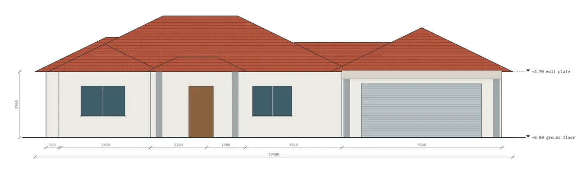
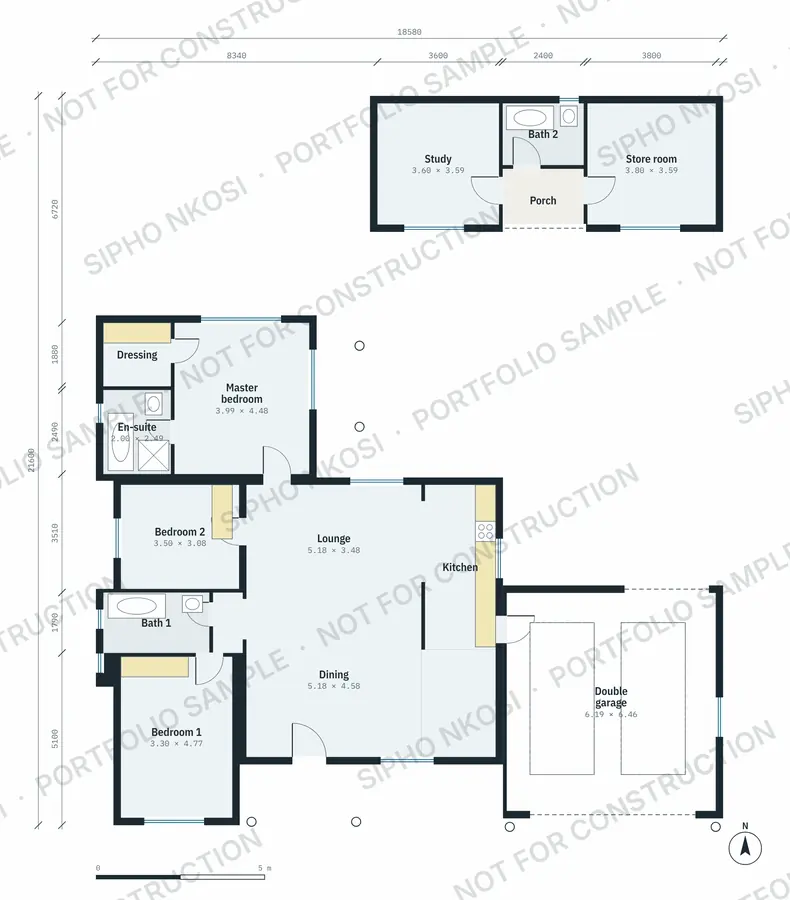
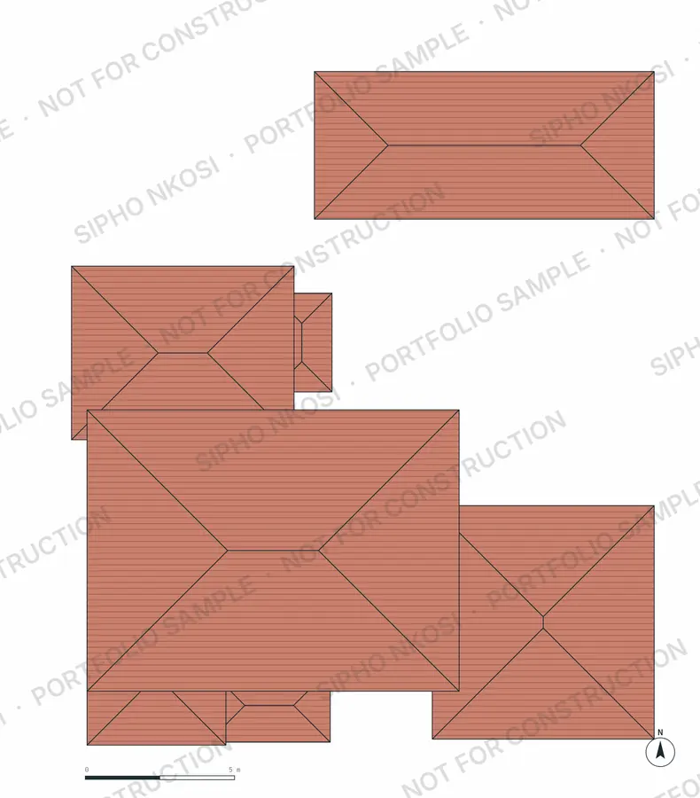
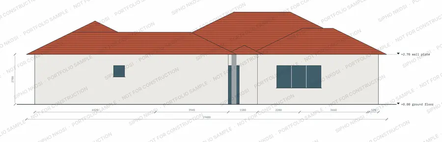
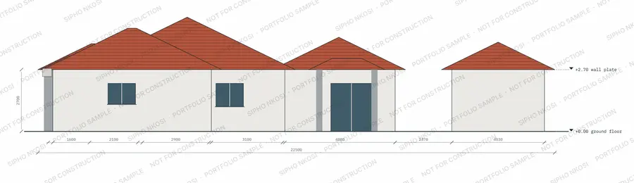
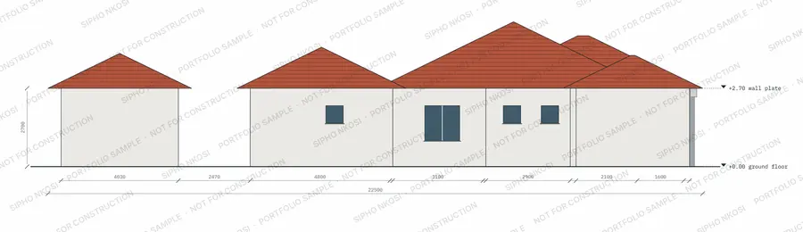
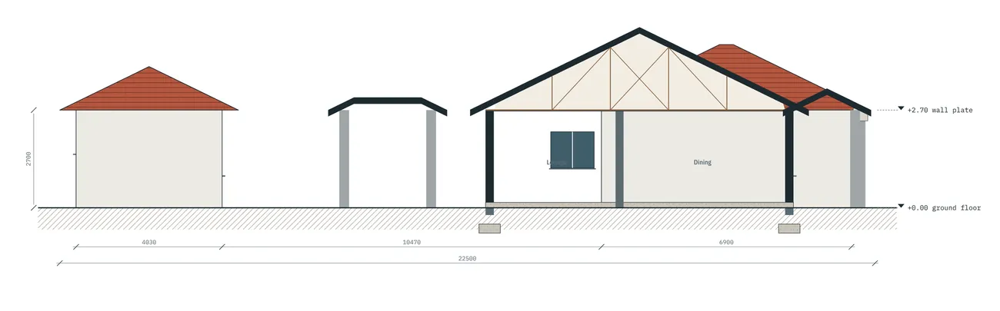
Drawing set as issued
The original submission sheets
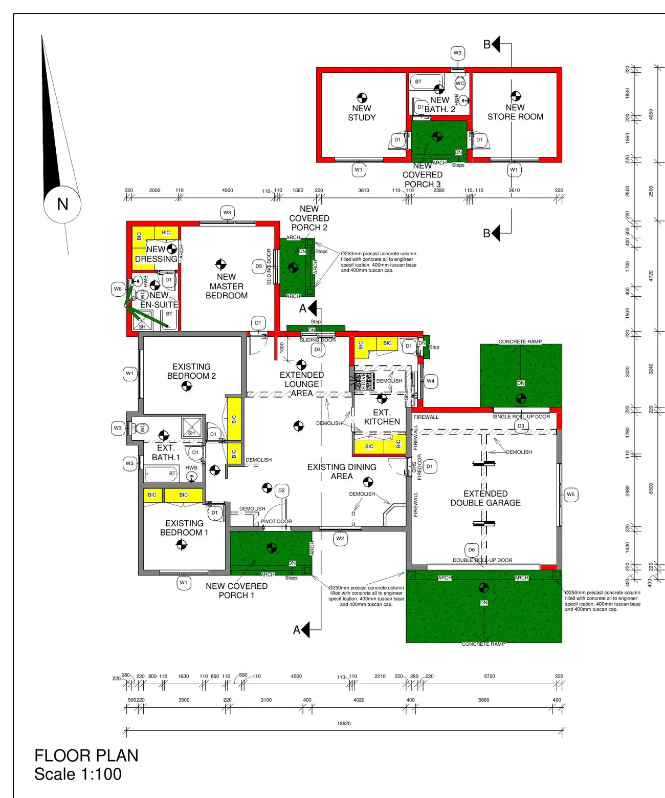
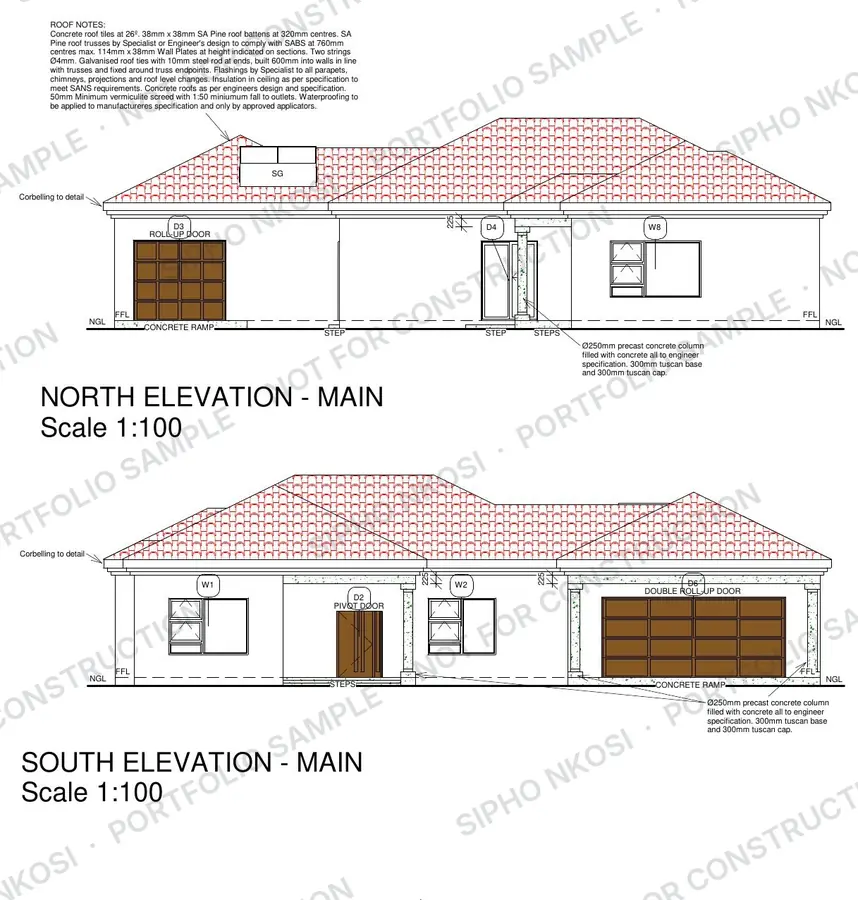
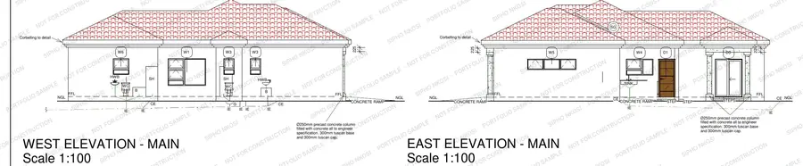
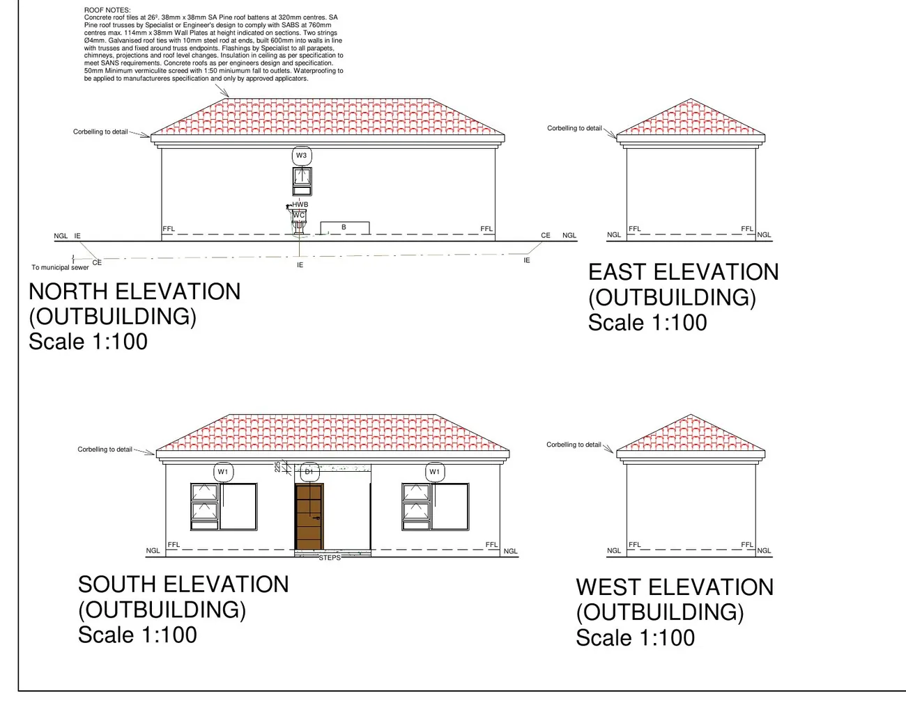
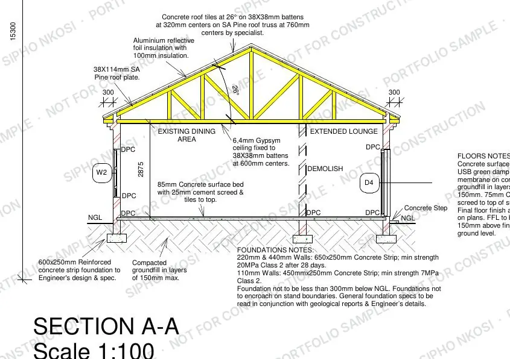
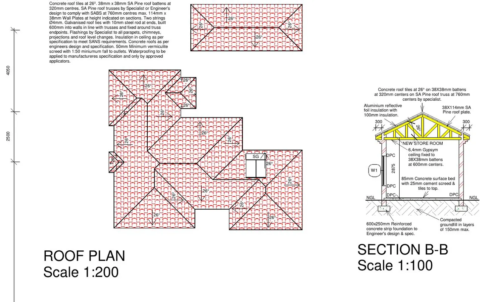
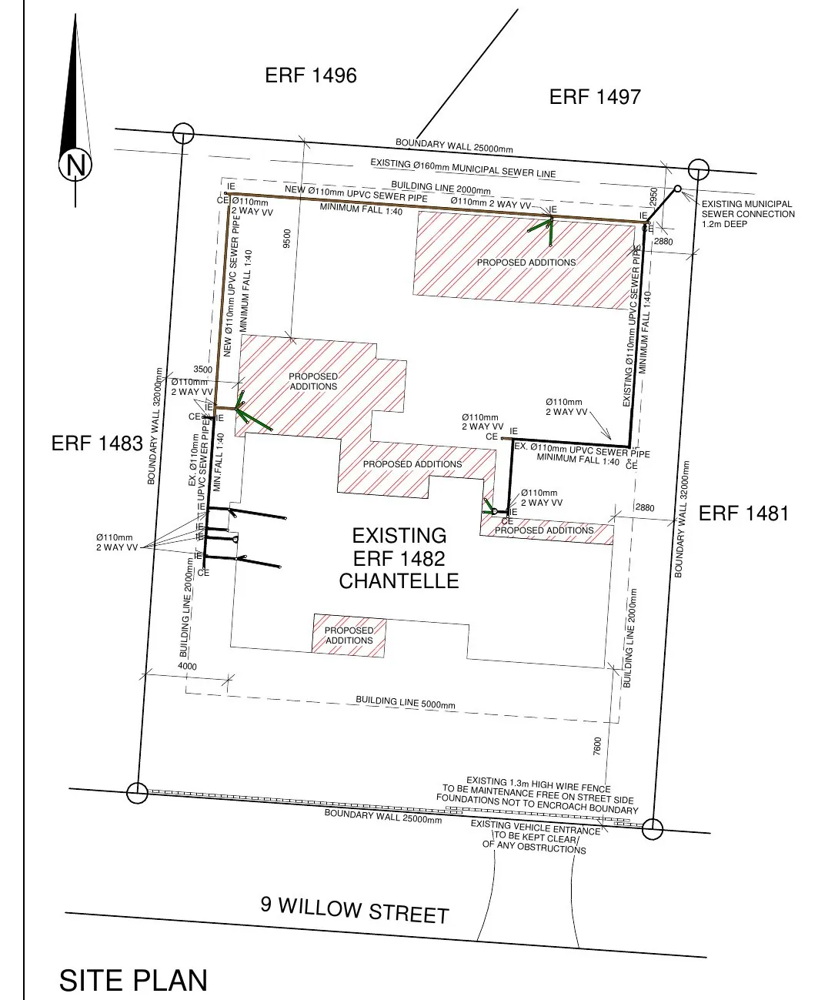
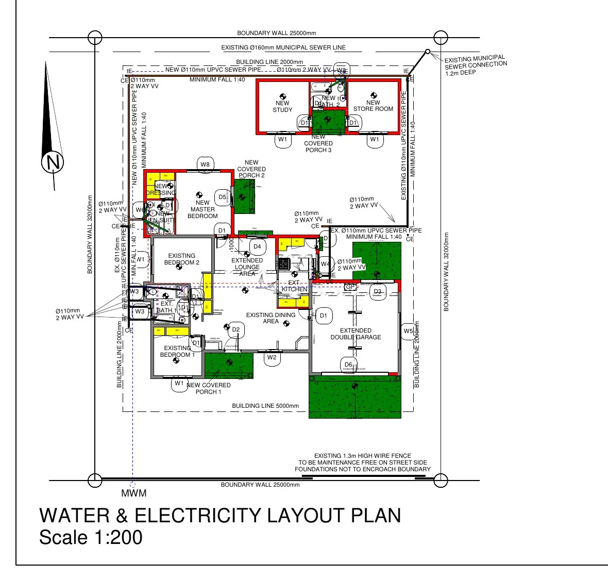
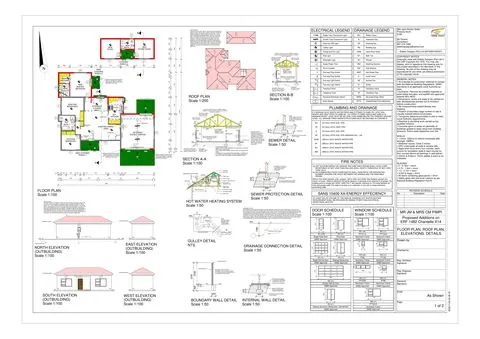
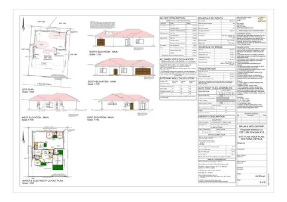